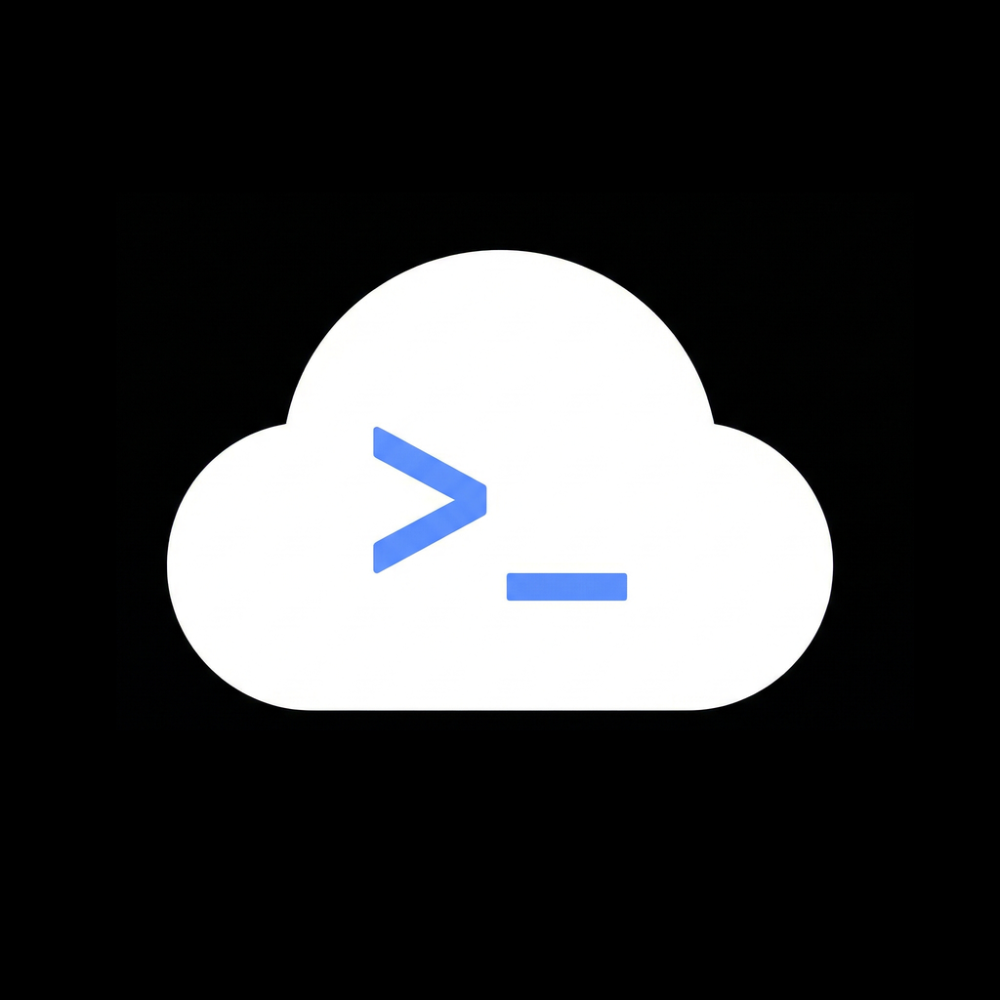
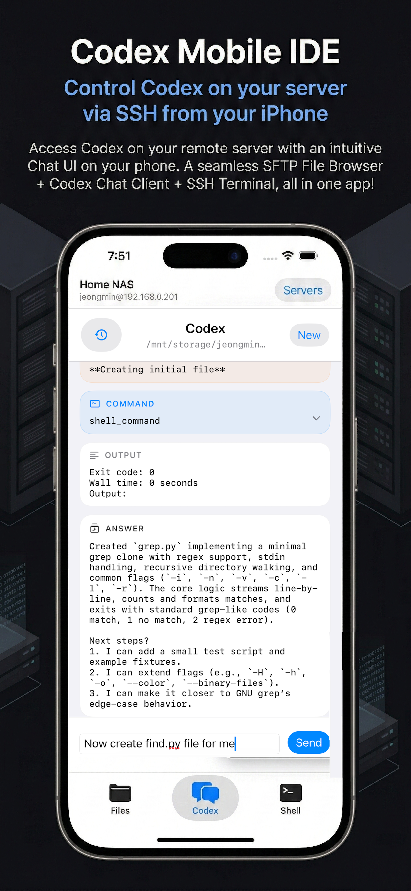

SSH connection
Connect to Linux or macOS machines you can already reach over SSH.

Codex Mobile IDECodex Mobile IDE is a mobile client for developers who run OpenAI Codex CLI on a remote server. Connect over SSH, browse files, open a shell, resume Codex sessions, and keep working from iPhone or iPad.

Simple, direct access to the same Codex environment you already use on your server.
Connect to Linux or macOS machines you can already reach over SSH.
Browse folders, edit text files, preview images, and manage files remotely.
Start Codex in the current folder, inspect outputs, and continue past sessions.
Use a real remote terminal with mobile-friendly accessory keys for developer workflows.
A quick look at the app on iPhone.


Need help getting connected or using the app with your own remote Codex setup?